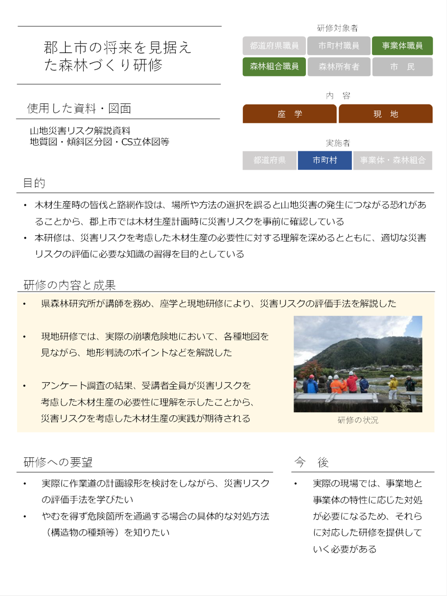

山地災害リスクを考慮した森林計画の手引き 第２版
第一章 まえがき
1.1 背景 ～山地災害と林業経営～
表層崩壊や土石流、河川の氾濫といった山地や水に由来する災害は、人間社会に甚大な被害を及ぼしてきました。これらの災害を防止するため、はるか昔から、森林には土砂崩壊や土砂流出を防止する機能の発揮が期待されてきました。また、どのような場所で山地災害リスクが高いのかに関しても多くの知見が得られています。 一方、日本において林業経営は厳しい状況が長く続いてきました。その間、森林の公益的機能が強調される中で、適切な林業経営は間伐などの保育作業を通じて公益的機能を維持向上させるという「予定調和論」が前提となってきました。ただし、適切な林業経営を続けていけば主伐の適期を迎えることになります。健全な森林・立木の存在が土砂移動を抑えるわけですので、主伐が行われて一時的にせよ立木のない状態を迎えることは、予定調和論の論理とは異なる状況を迎えることだといえるでしょう。 歴史的に見ても現在は、森林資源が充実し、山林が比較的安定している時代となっています（多田、2021）。資源の充実を背景に、木材生産量や主伐は再び増加してきていますが、一方で、地球規模での気候変動によって日本では豪雨の激化が懸念されています。豪雨が引き起こす山地災害を極力抑制することが望ましいのはもちろんですし、豪雨などに伴って大きな山地災害が起きてしまえば、その被害や復旧経費は林業経営の経済的便益を大きく上回ってしまうといえます。 このように、持続可能な林業経営には、伐採搬出作業などが斜面の不安定化および山地災害につながらないように注意し、山地災害リスクを低く抑える（リスク管理に努める）ことがこれまで以上に求められるといえるでしょう。また、伐採搬出の手法は以前と比較して、高密路網を開設しての車両系作業システムが主力となってきていますので、路網開設についても山地災害リスクを増大させないように注意することが求められます。
1.2 本書の目指すもの ～山地災害リスクに配慮した地域林業の実現に向けて～
収益事業としての林業経営を行うにあたって山地災害リスクを低減・回避していくためには、有効な情報・手法を整理し、山地災害リスク低減と林業経営を両立させる方法を共有していくことが望ましいといえましょう。 この手順書が最終的に目指すテーマは、山地災害リスク低減と林業経営を両立させる作業を支援することです。もう少し細かく言えば、市町村（市町村担当者）から森林経営計画（施業プランナー）の規模を想定し、具体的な各林分をイメージしながら、特に各種の森林計画（市町村森林整備計画や森林経営計画など）を通じて、山地災害リスク低減と林業経営を両立させる合理的な森林管理方針の選択肢を示すことが目的です。たとえば、複数の森林管理方針を適切な森林に割り当てるゾーニングなどを取り扱いますので、森林所有者や地域住民に対して説明責任を果たしたり、合意形成・意思決定を支援するのに役立てていただきたいと思います。
場所の工夫と作業の工夫
山地災害リスク低減と林業経営を両立させるために考えられる方法には、二つの要素があります。 一つ目は場所の工夫で、大まかに言えばゾーニングです。森林の状況は立地条件を含めて非常に多様なので、どのタイプの森林管理をどこに当てはめるのか、どの場所で特定の作業を回避・禁止するのかというゾーニング＝「場所の見極めと判断」は非常に重要です。 二つ目は、その林分における作業の工夫です。すなわち、路網開設や伐採搬出といった作業の方法を改良・変更することです。伐出に限らず、間伐などの森林保育作業の工夫もこちらのカテゴリに含まれるでしょう。 この二つの要素は区別できるものではなく、実際は両者を統合して「適切な場所の見極めを行い、場所ごとに適切な手法を割り当てる」という形になるでしょう。その土地の山地災害リスクに応じた林業経営を行う「適地適業」を目指すことが目標です。 この状況を分かりやすく示すのが「4象限図」です。
1.3 ４象限図の概念
まず、災害発生可能性が非常に高かったり、ひとたび発生した際の被害が甚大である場所は、災害リスクが非常に高い場所だといえ、このような場所では災害回避を最優先すべきです。ひとたび起こってしまえば、災害による被害は非常に大きいものですから、仮に目先の林業収益性が高くても、経済林としての木材生産ではなく法規制や治山事業を通じた災害対策が優先されることも必要だといえるでしょう。これが、図1-1におけるＲＥＤゾーンに相当します。なお、強い規制がかかりうるという意味では、非常に希少な生物の生息地などとも似たような性格を持つといえるでしょう。 次に、林業収益性が低い一方で災害リスクが高い場所は林業不適地であり、林業経営と災害リスク回避の軋轢(あつれき)は生じにくいゾーンだと考えられます。間伐等により、災害に強い森林とする管理が必要となるゾーンと考えられ、これが第4象限に相当します。 逆に、林業収益性が高く、災害リスクは低い場所は林業経営に適したゾーンであり、行政のゾーニングで「生産林」や「資源の循環利用林」などと呼ばれるタイプの林分に分類するのに最も適したゾーンです。これが、第2象限に相当します。 ここまでのゾーンにおける森林管理方針は、比較的単純でした。しかし、これ以外のゾーンでは、持続可能な林業経営を実現する上で、課題解決のための労力が必要となります。つまり、「林業収益性は高いが、山地災害リスクにも細心の注意を払うべき」という第1象限と、「幸い山地災害リスクは低いが、林業収益性も低い」という第3象限です。特に前者は、林業経営と災害リスクが最も軋轢を起こしやすいところであり、地域の意思決定が特に必要になるゾーンです。リスク低減の配慮や事業回避を検討し、林業を「うまく行っていく」ことが望ましいといえるでしょう。 日本では、森林所有者の財産権に根差して木材生産を実施する権利は強いものです。つまり、収益事業としての林業経営が法的に強く規制されるゾーンは限定的です。例えば、指定施業要件が設定される保安林でも、禁伐指定の場所は限られた面積に留まります。したがって、山地災害リスクを考慮した林業経営が求められるゾーンはかなり大きな比率を占めうることになります。地域で合意形成を行い、性格の異なる各種ゾーンによって地域森林を色分け（ゾーニング）し、それぞれのゾーンに対して望ましい森林管理方針を適用できれば、地域林業をより上手に実行することができると期待されます なお、全域をどれかの区分にゾーニングする必要はなく、ある象限の性格が濃い森林のみを区分・指定し、中間的な性格の森林は「白抜き」「白地」のまま残した形のゾーニングにすることも考えられます。そのような方法自体も地域の考え方次第です。
地域の意思決定：誰もが受け入れられる地域林業を
4象限図を見ると、「『どの値を境に林業生産を禁止にすべきか』といった具体的な値（閾値(しきいち)）を知りたい。たとえば、傾斜なら何度以上が危ないとすればよいのか？」ということが非常に気になることと思います。しかし、二つの理由から、絶対的な閾値というものを提示することはできません。 一点目の理由は、山地災害リスクを含めて、未来を完全に予見することは不可能だからです。山地災害は普通、最終的には、降雨や地震のような誘因（引き金）によって発生します。実際にいつどこでどの程度の「引き金」が引かれるかを正確に言い当てることは不可能なため、「これならば災害は絶対に起きない」というゾーニング基準を作ることはできませんが、適切な注意・配慮を行うことによって山地災害の発生確率や災害程度を低く抑えることができますので、そのような合理的な処置をしておくことが求められるでしょう。 二点目の理由は、価値判断は人や社会が決めることだからです。何をどれだけ重視するかは人、地域、時代などによって異なるため、普遍的に正しい閾値というものは最初から存在しません。 これらのことから、「災害リスクはどの程度まで低減させるべきか」「林業経営に対しての負担・制約をどの程度受け入れるか」については、できる限りの情報をテーブルに並べた上で、なるべく誰もが受け入れられる方針（落としどころ）を見つけて合意形成していくしかありません。これを行うことによって地域全体として、より合理的で、リスク面でも経営面でもより賢い森林経営を実現できると期待されます。 ゾーニングや規制といった災害リスクを回避する工夫・対処を行うことについて、個別の森林所有者や素材生産業者が「林業生産に対する厳しい制約を受けるのは困る」と感じられるとしたら、その気持ちはよく分かりますが、見方を少し変えていただきたいのです。災害が起きて嬉しい人などいないでしょうから、「もともと考慮しなければいけなかったが情報不足等で分かっていなかった災害リスクをも織り込んだ、より適切な林業経営を行えるようになってよかった」「家族や他人の生命・財産を脅かしてしまう可能性や、大損害を被る可能性を下げることができてよかった」と捉えていただければ、納得しやすいのではないでしょうか。その意味でも、地域で広く納得される方針を採用することや、その方針を皆で守っていくことは重要なことです。
1.4 意思決定支援業務のスケール感
地域として、山地災害リスクを極力回避しつつ、林業経営もうまく実行するためには、誰が何をどうすればよいのでしょうか。 本書の内容を踏まえ、森林所有者や地域住民の意思によって、より合理的な広域的林業経営判断を行っていただくことが期待されます。ただ、災害リスクや森林の情報取得・共有や、災害低減という公共性・公益性、森林や山地災害の専門性を鑑みると、やはり行政を中心とする支援・サポートは大変重要です。それは言い換えれば「計画的な地域森林管理」を実現することだともいえます。 山地災害リスクに配慮した地域林業を実現するための意思決定支援活動の立ち位置については、図1-2のように、おおよそ3つのステージ（スケール）に分けて考えてみると分かりやすいです。
林業や地域森林管理の「計画行為の段階」としては、Base(大前提)→Can(可能性)→Do(実行)、の３ステージがあると考えると理解しやすいです。 最初のステージとして、当事者の努力ではどうにもならないBase(大前提)があります。これは、情報ならば検討を行うための基礎情報のことで、地形地質や気象などが該当します。森林等の現況ではなく大元の、潜在的な枠組みのことですので、Baseをポテンシャルと呼ぶこともできるでしょう。 次に、やや広い範囲で、やや長期的に、努力によって改善・克服しうる部分がCan(可能性)のステージです。このステージは、科学的知見や合意形成による効果を発揮させられるステージであり、「計画」して賢く行動することで改善が期待できる部分で、本書が主に扱う内容でもあります。山地災害リスクに配慮した地域林業の実現に向けて、行政的な支援も求められる部分です。 さらに細かい具体的な内容、すなわち、各区画についての皆伐や間伐等の実施判断や、それをどう行うかといった部分は、Do(実行)のステージに相当します。 民有林に対する森林計画制度についていえば、特に市町村森林整備計画は、Canの内容を主に含むべき立ち位置にあると思われます。森林経営計画や地域の路網配置計画なども、Doの要素を多分に含みつつ、長期的な視野に立って大きな改善を計画的に行っていくというCanのステージの側面を含むことが期待されています。 ここで、ゾーニングに関して強調しておきたい点があります。市町村スケールで作成するゾーニングの位置づけは、地域の意思（方針）を反映したCanの領域の内容であってほしいということです。変更できない前提条件であるBaseの情報はいわば検討材料ですので、それに基づくマップはまだ最終的なゾーニングではありません。一方、個々人や各々の森林区画の自由意思だけに基づくDoを集めてマップ化しただけでは、それがたとえ市町村全域のスケールであっても、本来あるべきゾーニングや計画であるとは言えません。有用な情報としてBaseを踏まえたうえで、Doの動向や要望を見ながら、それをありのまま肯定するのではなく、地域林業全体にとって災害リスクを含めたよりよい判断・方向性をまとめたCanの計画を地域で作り上げ、実行していっていただきたいと思います。
本書の中心テーマであるゾーニングを軸とする地域の林業方針を決定するまでには、図1-3のように、客観的作業と、判断・決断を伴う意思決定作業を往復しながら進めていくことになります。まずは素案作りのためにも、①の基礎情報の収集整理がもちろん必要です。そこから地域のステークホルダー（地域住民等の利害関係者）に提示できる地域林業方針の素案（ゾーニング案など）である③の段階に至るためには、政治・行政の担当者や専門家による②の「骨格決め」の段階が不可欠です。②の段階で例えば、当該地域の林業が目指す大方針はどのようなものが考えうるか、当該地域の実態からいっても相応しいゾーニング区分は何区分あるか、そして「どのような条件の森林は災害リスクが大きいと判断するか」といった、素案を作るための土台・骨格を考えます。それを素案の形に成型する②→③の作業は、判断をあまり伴わない客観的作業であると言えますが、試算した結果が現実的に実行困難だと予想されたりすれば、②に立ち戻っての再検討も必要です。こうして③で出来上がった、できれば複数のゾーニング案をもって④のステージに進み、ステークホルダーが最も納得できる形を探り、合意形成を図っていくことになります。 地域の意思（方針）を持った、Canの領域に踏み込んだ意欲的なゾーニングを実現するには、やはり実質的に、行政担当者や専門家に特に期待される②のステップの働きは重要となります。 ③の案を使って④の意思決定を適切に行ってもらうためには、情報の紹介や説明は不可欠で、このステップでも行政担当者や専門家の貢献は重要になります。同時に、議論のコーディネーター機能も不可欠です。 ③の素案が④の段階で合意に至らず、②に立ち戻っての骨格変更が必要になることも考えられます。この際は持ち帰って日を改めるのが通常でしょうが、技術の進んだ現在ではその場で②③を行って修正案を作成するということも考えられ、これならば機動的な議論進展も期待できます。また、連続開催の検討会やワークショップのような形は、②の段階からステークホルダーの意向を取り入れて検討を進めているともいえ、合意形成のためには大いに有効です。
1.5 本書の精神
以上のことを基礎として、以降では個別の知見や技術について説明していきます。まえがきの最後として強調しておきたいのは、担当者や地域の熱意によって、地域の森林管理はより合理的で望ましいものとなることが期待できるということです。 入手可能な情報を適切に用いれば、明白な山地災害リスクは回避・低減させることが可能となってきています。しかし、個別の地域についての詳しい情報は、最終的には個別の地域にしか存在しません。例えば、過去の山地災害の発生場所や、現在進行形で整備されている路網の状態などは、広域的なデータではなかなかカバーしきれない情報です。ダウンロードや購入できるデジタルデータも充実してきていますが、自分たちで地域のデータを集めることで、より建設的な選択肢を地域に提示することが可能になります。その上で、地域の人々が本音を冷静に見つめた上で選択肢を検討・議論することで、納得性の高い選択肢を選び取ることができると期待されます。人間の知識や予測にも限界はあるので、絶対的な正解はありません。よりよい選択肢を採用することで経営とリスク状態を客観的に改善すると同時に、地域の人々が大きな納得感を得ることで、その方針を地域として着実に実現していただきたいと思います。
本書の章立て
二章では、災害リスク低減と林業経営を両立させるためのゾーニングを進めるための概念（考え方）と、それに必要な情報の概略を解説します。また、例を用いて、各情報を組み立ててゾーニングや地域の森林管理方針を検討していく流れのイメージを紹介します。 三章は情報篇として、有用な様々な情報についての解説と、その入手方法を紹介します。 四章は事例篇として、各地におけるゾーニングや普及の取り組み事例を紹介しています。
第二章 解説篇―ゾーニングの進め方―
災害リスク低減と林業経営を両立した森林管理を行うには、前章でも示された適切なゾーニングをすることが重要ですが、意味のあるゾーニングとするためには、どの側面に関しても科学的知見に基づいた仕分けをする必要があります。本マニュアルでは災害リスクと林業経営を軸とした考え方を紹介しますが、目的に応じて適切な情報を基にして行うことが大切です。ゾーニングの根拠となる情報は、地形や地位、気象条件等の人の手では改変することができない（≒土地ポテンシャル）ものから、植栽樹種や路網の有無等の人為的に改変可能なものまで様々なものがあります。また、前章の図1-2で述べたように、ゾーニングを行う対象のスケールによって、適切なレベル・スケールの情報を扱う必要があります。本章では、各軸の概念と、想定するスケール（規模）ごとに必要な考え方の例を紹介します。本章の最後では、リスクと林業経営の双方を踏まえたゾーニング作成のイメージを、マップ例も用いて紹介します。
2.1 災害リスク軸
可能な限り土砂災害リスクを減少させた施業方針を検討するためにはまず、リスクの程度を正確に把握することが大切です。土砂災害リスクの考え方には、大きく分けて二つの要素があります。地形や地質などの自然条件によって決まる林地の崩れやすさと、社会条件的によってきまる保全対象との関係（距離）です。以下では、この二つの要素それぞれについて、リスクの大きさを評価・判断するための概念や基礎的な情報をご紹介します。 なお、地震を誘因とする場合に土砂災害リスクの高い場所については、豪雨等とは傾向が異なります。本書では、豪雨等を誘因とする土砂災害リスクについて取り扱っていきます。
2.1.1 林地の崩れやすさ
崩壊の発生位置は一見不規則に見えますが、崩壊しやすい場所には共通する以下の特徴があります。
- 傾斜25°以上の平衡～凹地形
- 土層が粘土（埴土）にまで風化している
- 地下水が集中する場所（水分量：湿以上）
山地でこの 3 条件が該当する場所は危険地形と呼ばれます。様々な場所がこれに該当しますが、具体例を挙げると、0 次谷、断層地形、地すべり地形、地質境界、崩積土（沖積錐）などです。危険地形については2.1.1.2でさらに紹介することとして、まずは基本的な災害リスクを判断する情報について紹介します。
2.1.1.1 林地の崩れやすさのリスクを判断する情報
・地形傾斜
地形量の代表的な指標である地形傾斜は、定量的に崩壊危険度や施業の困難度を判断するために大変有用です。地形傾斜の元になる情報であるグリッド毎の標高値データ＝DEM（数値標高モデル）データは、国土地理院およびG空間情報センター等から入手可能で、そこからGISソフトにて地形傾斜データを算出します。地形解像度を表すグリッドのサイズは50ｍ、10ｍ、5ｍ、1ｍなどが整備されています。GIS上で傾斜の分布をみることで、リスクの判断を行う基礎情報となります。また、詳細解像度の情報（5ｍ以下）は、地域によって整備の状況が異なりますが、広域の判断（地域森林計画等）を行う際には、斜面レベルではなく小流域レベルでの傾向把握を行えればよいため、必ずしも細かい情報を用いる必要はありません。災害リスク判断だけでなく林業作業の難易度（収益性）を決めるためにも基本的な情報となるので、地形傾斜については必ず整備する必要があります。

・CS立体図
例えば、同じ30度の斜面でも地すべりブロックの中と外では崩壊危険度が異なるように、傾斜だけでなく、地形の形状も災害リスク把握には欠かすことができません。定量的な判断に加えて定性的に地形種を読み取る地形判読を行うことで、崩壊危険度や施業の困難度を示すことができますが、地形判読に役に立つ情報も入手可能となってきています。CS立体図は長野県林業総合センターで開発された図法で、地形の平面・縦断方向の凹凸である曲率（Curvature）と傾斜（Slope）を強調し、視覚的・直感的な地形判読が可能です。地形的特徴を強調した図法であるため、災害リスク把握に適しています。長野県のマニュアル（長野県森林整備加速化・林業再生協議会路網部会 2014）や岐阜県森林研究所の資料（臼田、2016；臼田、2017；和多田、2018）等を参考に、災害リスクを判読するようにしましょう。CS立体図は基本的には詳細DEMを用いることで判読性が高まりますが、10ｍDEMでも 侵食の進んだ地域かどうかといった大まかな傾向は把握できます。全国10ｍメッシュでのCS立体図のデータは（G空間情報センター）で公開されていますので容易に確認可能です。また、詳細なCS図に関しては、各地で整備されている詳細DEMを入手し、GIS上で作成することも可能です。作成方法に関してはG空間情報センター（CS Map maker）や喜多（2019）等が参考になります。
・地形解析ツール
地形の凹部や侵食具合といった、より詳細な地形解析を表示するツールも開発されています（G空間情報センター 数値地形解析アプリケーション（https://www.geospatial.jp/ckan/dataset/demapp））。この数値アプリケーションは、DEM（数値地形情報）を用いて、山地災害リスクや路網配置の検討に有効な図を、GISを用いずに、アプリケーション単独で出力することが可能です。以降の章に出力可能な地図を活用した検討方法が提示されていますので、参考にしながら利用してみましょう。特に、このアプリケーションは詳細なDEM（1ｍ）を活用すると効果的で、図1-2での上部に相当するような、森林経営計画などの個別具体的なスケールでのゾーニングを行う際には、これらの情報も活用して斜面レベルでのリスクを把握したうえで検討を進めましょう。
・SHC
SHCとは平面曲率の標準偏差（Standard deviation of Horizontal Curvatureの略）のことで、山地災害リスクを評価する新たな地形指標として提唱するものです。 SHCは間接的に尾根・谷の密度を表す地形量ですが、これが高い値となるエリアは崩壊跡地形の密度が高い場所とよく一致します。SHCを用いて崩れやすい林地を示すことで、適切なゾーニングに繋げることができると期待されます。 SHC図の作成については、第二章末尾のコラムもご参照ください。
・地すべり地形分布図
地すべり地形分布図はGISデータとして防災科学技術研究所より公開されており、比較的大きな規模の地すべりブロックを把握することができます。広域での利用方法としては、地すべり地形の多い地域での高密路網開設を避けた施業を検討するといった判断に利用できます。個別の団地レベルでは、地すべりの末端部において路線開設や、路面上の排水を側方崖に流すなどの、移動体が不安定になるような作業を避けることを検討するといった材料として扱うことができます。ただし、すべての地すべりが示されているわけではないので、CS立体図等からの判読と合わせて活用することとが重要です。
・地質図
地質図もWEB上で公開されており、有効な情報です。地質の複雑な地域や断層線上での路網開設等は、土砂災害リスクを高めます。一般に入手できる地質図には1/20万と1/5万の地質図があり、それぞれ特徴が異なります。1/20万地質図は県や市町村単位といった広域での傾向把握に向いていますが、細かな地質情報は省略されているため、個別の施業団地や、路線計画の検討には向いていません。1/5万地質図は詳細な地質情報が記載されており、林分レベルでの伐採計画や、路線計画に有効です。検討する対象に合わせた縮尺の情報を活用しましょう。なお、1/5万地質図は未整備の地域もあります。 これらの地形・地質に起因する災害リスクは人為的な変更がほとんどできない基礎的（Base）な情報といえるため、どの段階のゾーニングを検討する場合にも必ず留意する必要があります。
2.1.1.2 危険地形の例
団地や林分レベルでの災害リスクや、路網開設の可否を判断するためには、斜面レベルで危険な場所を見極めることも重要です。前述の崩壊しやすい場所の三条件を備える不安定な地形として、以下の5つの「危険地形」が挙げられます。
- 0次谷（凹地形）
- 断層地形 （破砕帯・鞍部・リニアメント )
- 地すべり地形
- 地質境界
- 崩積土（沖積錐）
0次谷（凹地形）は過去の崩壊であり、急傾斜で水が多くなっています。土層が薄いと崩壊しませんが、土層が厚いと崩壊が発生する特徴があります。そのため、土砂移動が繰り返し発生しやすい場所です。作業道等を開設すると盛土ごと崩壊し、土石流化するリスクも高いので、十分な注意が必要です。等高線からの判読は熟練を要しますが、CS立体図等で着色加工することで、濃い青となっている凹の上部に広がる薄青色の範囲として判読することができます。また、前述の数値地形解析アプリケーションでは、侵食高（白澤ら、2018）、傾斜、平均曲率から0次谷等の凹地形を強調した図を作成することも可能です。作成された図で示された範囲が必ずしも0次谷となるわけではありませんが、判読範囲の絞り込みや広い範囲での全体的な検討時には効果的ですので、利用してみましょう。
断層は、三角末端面や連続した鞍部の独特の地形形状を形作ります。断層周辺には断層粘土と破砕帯が分布し、地質がもろく水が回りやすいため、崩壊が発生しやすいです。特に、路網を断層に沿って開設すると崩壊が連続して発生するため、利用が非常に困難になります。そのため、路網開設において断層を通過せざるを得ない際には、断層と直交方向に最短距離で通過することが理想です。広域では、空中写真でリニアメントを判読することやCS立体図で連続した鞍部を判読することで断層を把握できます。
地すべり地形は独特の馬蹄形を示し、崩落に向かって様々な段階で滑動・停止しているため、路網開設によって固着域を削るなどの作用があった場合、急速に移動が進むことがあります。また、地すべり地形の滑落崖、側方崖、舌部等の各部では、地盤が風化し、水が回りやすいため、路網開設を行うと崩壊しやすいです。大規模なものは地すべり分布図として公開されおり、小規模のものはCS立体図で、馬蹄形になった崖と内部の移動体が平らになっている地形として判読することができます。
地質が2種類あれば、強度と透水性が必ず異なります。そのため地質境界上には水が集まりやすく、透水性の高い地層は相対的に強度が低くなるため、崩壊が発生しやすくなります。地質が複雑に入り組んだ地域では境界も多いため、崩壊発生のリスクも高いといえます。地質図での色分けが多い地域などは、十分注意して管理方針を検討しましょう。
沖積錐は過去の土石流が堆積したもので、扇状地形を示しています。扇状地が大きいほど、繰り返し土砂が運ばれており、その上流部は崩れやすくなっています。適度に傾斜が緩やかとなっており、地下水位が高く水も得やすいため、宅地開発されていることも多く、沖積錐の上流部で伐採や路網作設を検討する際には十分な配慮が必要です。
それぞれの危険地形において、発生が懸念される土砂移動現象は異なります。前述した情報から危険地形の場所を十分に判読したうえで、どのような森林管理を行っていくべきかを検討していくことが大切です。
2.1.2 保全対象との関係（距離）
地形的リスクが同等であっても、崩壊が発生してしまった場合の影響を想定すれば、住宅等の保全対象との関係は重要な検討事項になります。林地で崩壊が発生して土石流となれば、2km 程度は流下して到達することを想定する必要があります（多田、2016）。また、近年の豪雨時の雨量の増加や、崩土内には水に浮く流木が多く含まれるため、土石流の流下距離が 2km を上回る事例もしばしば確認されています。万が一、施業の結果として災害が起こった場合には、下流2km以内に保全対象が存在する場所では被害を与えてしまう可能性が考えられるため、緩傾斜地など地形的リスクが低い個所でも保全対象が近ければ、最大限のリスク低減に関する配慮を行ったうえでの施業を検討する必要があります。
・保全対象への土石流の到達可能性（G空間情報センター 数値地形解析アプリケーション）
保全対象との距離を検討する最も単純な方法としては、国土地理院のGISデータ（建物等）からバッファを発生させて、検討する方法があります。平面的距離の表現となるため、あくまで概略的ですが、皆伐や高密路網の開設の可否を検討するには有効です。より詳細な検討を行うためには、数値地形解析アプリケーションを利用して、該当する保全対象へ土石流が到達してしまう可能性のある崩壊発生源となりうる斜面の範囲を表示することが可能です。経営計画レベルの具体的検討には特に有効です。保全対象は地域によって様々で、状況（例えば住宅が有人か無人か）によっても変わりうるものです。林業を行うことで保全対象に損壊を与えることはあってはなりませんが、どのような保全対象が地域に存在しているかをよく調べたうえで、災害リスクとの関係を評価するようにしましょう。
以上、山地災害リスクの把握に必要な主な点を紹介してきました。これらの他に、地域における過去の災害履歴は、基本的な情報としてとても重要です。普遍的な知見に加え、文献や聞き取り、地形判読による災害の痕跡の調査をすることで、地域の災害リスクをより具体的に把握できるでしょう。
2.1.3 リスク軸の考え方の4象限
以上、山地災害リスクの二つの要素を評価・判断するための概念や基礎的な情報を紹介しました。そのうえで、第一章で例示した4象限図では林業収益性軸と山地災害リスク軸という2軸で各林地を評価したように、各林地の山地災害リスクがどの程度高いのかを表現してゾーニングに活用するには、林地の崩れやすさと保全対象との関係（距離）の二つの要素をうまく一つのリスク軸として表現できると便利です。 そのため、二つの要素の関係を、再び4象限図にして考えてみましょう。
土砂移動が発生しやすく、人家などの保全対象にも近いため人命や財産への被害に直結しやすい、最も危険度の高い第2象限（危険度1位）に該当する林地は、路網開設や主伐に伴う土砂災害リスクが高く、リスク面からみて最も林業に適さない場所だと考えられます。また、山地の安定性は比較的高くとも、土砂移動が発生すれば保全対象に到達してしまう可能性が高い第3象限（危険度2位）での施業は、たとえば路網開設での不適切な施工によって土砂災害を起こさないためにも、排水施設の設置や路体の施工に十分な配慮がなされるようにしましょう。一方、保全対象からの距離があっても、土砂移動発生の可能性が高い第1象限（危険度3位）のような林分では、人命等に直結する被害が生じる可能性は小さいものの、土砂移動リスクを考慮しない無理な主伐や不適切な路網開設を行えば豪雨時に林地が荒廃し、その後の森林資源利用も困難になる可能性があります。このため、斜面レベルでのリスクを見極め、部分的な保残（伐り残し）などの配慮が求められます。第4象限（危険度4位）に該当する林地は山地災害リスク管理上は最も林業に適しているといえ、このような林分が地域にどの程度存在しているかを把握しておけば、将来的に確実な生産計画を検討する基礎情報ともなります。 このように、山地災害リスクの2軸の情報を用いることで、危険度1～4位に順位づけるという一つのリスク軸に統合することができました。その分布をマップ化した例を以下に示します。このようなイメージを参考に、リスク評価に有効な情報の収集を行い、適切なリスク管理に努めていただければと思います。
2.2 収益（林業経営）軸
林業経営軸のなかにも、人為的改変ができない地位等の土地ポテンシャルと、路網からの距離や作業コストなどのように人為的な作業や判断によって変わりうるものがあります。また、この軸では蓄積量や樹種など時間によって変わる条件があるため、現況に基づく判断なのか、将来を見越した判断なのかを整理しながら検討する必要があります。 以下に、活用可能な情報を例示します。
2.2.1 収益軸検討に有用な情報
・地位指数
土地生産力の指標として最も一般的に用いられているのが地位指数です。地位指数は基準林齢（一般的に40年を用いる場合が多い）における上層木平均樹高によって表現されます。土地生産力の直接的な指標としては林分蓄積が妥当ですが、林分蓄積は密度管理によって大きく変化します。上層木平均樹高は林分密度の影響を受けにくいため、その土地における成長の良さを評価する指標として用いられます。気象条件が大きく変わらない範囲において、地位指数は土壌、地質、地形との関係が強く、施業の結果等にあまり影響を受けないため、木材生産への向き不向きを判断するのに有効な情報です。なお、地位指数を数段階に区分したものが地位です。 地位指数の空間分布を推定するためには、地位指数と地形との関係にもとづいた推定モデルを用いるのが実用的です。地位指数と地形との関係は1960年代から研究されており、多くの事例で明瞭な関係がみられています。森林域の土壌や地質に関する空間情報は、解像度や情報量の面で地位指数分布を推定するために十分ではないですが、地形の空間情報は標高データが全国で整備されています（第三章 情報篇参照）。このような標高データを用いて、GISにより地形解析を行って様々な地形的特徴（地形指数などと呼ばれます）を計算することができます。植物の成長に大きく影響する土壌水分と関連する集水面積や凹凸度などの地形指数は、地位指数と高い相関関係にあることが知られています。 地位指数は自然的な立地条件によって決定するため、人為的に改変することができない指標であり、ゾーニングを行う上で収益性を評価するための最も基礎的な要素（Base）です。そのため、あらゆるレベルのゾーニングで考慮すべき要素であるといえます。地位指数は不変的な要素と考えられますが、気候変動により気温が上昇することによって成長が良くなる地域と悪くなる地域があることから、長い目で見た場合には変化することも考慮しておく必要があります。 地位指数の分布図作成については、第二章末尾のコラムもご参照ください
・路網開設の可否
路網の開設可否に関しては、基本的には各作設指針等にあるように、地形の傾斜から判断できますが、林道や専用道クラスの基盤路網の整備を検討する際には、地形褶曲具合や、尾根谷の数等の地形の複雑さも重要な判断材料です。G空間情報センターの数値地形解析アプリケーションからは、最小の曲線半径が地形の曲がり具合と合うか（大規模な施工を行わなくて済むか）を判断できます。このような情報を用いることで、災害リスクは低いが収益性も低い地域で、将来的に路網の開設によって収益性を向上させて生産を行う林分とすることができるかといった検討を行うことができます。
・作業システム
木材の生産費用を決定する大きな因子としては作業システムがあります。大きく分けて車両系、架線系の作業システムがあり、機械の規模や、主伐か間伐かによっても生産性は異なります。そのため、普段から生産時の条件と生産性を把握しておくことが大切です。一方、生産性のデータがない場合でも、対象の地域で適切な生産を行うことができるシステムは検討可能です。 作業システムを選択する因子としては地形の傾斜と複雑さがあります。後藤（2016）や有賀（2018）の示す方法では、傾斜と起伏量（地形の複雑さを代替する指標）に応じて適切な作業システムを提示しています（図2-１２）。ただし、例えば地域でタワーヤーダがほとんど運用されていないといった状況も考えられます。素材生産事業体を交え、地域で実際に使用されているシステムと生産費用を把握しながら、作業システムの区分条件を検討していくことが必要です。また、長伐期大径木が増加すれば、現在の機械規模では生産が難しくなってくることや、新たな機械開発によって作業システムが変わってくることも考えられます。そのような場合であっても、傾斜や起伏、地質など普遍的条件から、災害リスクを高めることなく導入可能な条件を整理し、広域での適切な作業システムを想定しておくことが大切です。
・路網からの距離
現時点で整備されている林道・専用道・作業道からの距離や位置関係によって、搬出コストは大きく影響を受けます。路網データに関しては各地域で整備状態が異なりますが、路網データからGIS上でバッファを作成することで、概ねの傾向は判断できます。ただし、使用する路網データがいつの時点のものか、どの規模の路網までが再現されているか、各路線が現状で利用可能かを確認したうえで検討材料として扱うことが望ましいです。
2.2.2 収益軸の考え方の4象限
リスク軸と同様に、収益軸にも前述したような様々な情報が含まれます。収益軸では、人為によってほとんど変えることが出来ない大前提（Base）となる指標と、基盤整備等の人為的な行為によって変えることのできる指標を分けて考えましょう。それにより、長期に生産林として扱う森林なのか次の基盤整備候補地なのか、といった位置づけを把握しやすくなり、次にリスク軸と合わせて総合的に検討する際に順位付けを行うためにも有効となります。例えば、普遍性の高い情報と改変の可能性がある情報を二軸に用いて再び4象限図で判断すれば（図2-13）、「収益軸の観点からみて」長期的にも林業に向いた範囲や、現状では地利条件が不利であるものの土地生産力が高く今後の路網整備を優先的に行うことが「収益軸の観点からみて」有効と考えられる範囲などを検討することができます。このように、複数の情報を組み合わせることで収益軸の評価値として扱うことができますが、前述の意思決定のスケール感にもある通り、検討対象のスケールによってどの情報を優先するかを検討することが重要です。-8）、「収益軸の観点からみて」長期的にも林業に向いた範囲や、現状では地利条件が不利であるものの土地生産力が高く今後の路網整備を優先的に行うことが「収益軸の観点からみて」有効と考えられる範囲などを検討することができます。このように、複数の情報を組み合わせることで収益軸の評価値として扱うことができますが、前述の意思決定のスケール感にもある通り、検討対象のスケールによってどの情報を優先するかを検討することが重要です。
2.3 ゾーニングの手順と考え方
以上のような情報を活用し、山地災害リスクと林業経営それぞれの評価軸を整えた上で、ゾーニングに話を進めます。その際はまず、目標林型や森林の利用形態を検討し、どのような区分（選択肢）を設けるかを検討する必要があります。一方で、あまり細かく分けすぎると実行時への支障や、実態的な管理との乖離が生じやすいので、注意が必要です。以下では山地災害リスクの低減と経営の両立を目指して、多くても4象限＋α程度のゾーニング区分としています。 また、各計画段階の規模に応じて、有効な情報は異なってきます。必ずしも細かい情報を用いればよいわけではありません。各段階での考え方・事例を参考に有効な情報を利用してゾーニングを行ってください。以下にまず、森林計画の規模別に踏まえるべき基本的な考え方を整理します。そのうえで、リスク軸と収益性軸の双方を合成してのゾーニング作成のイメージを、例を使って解説します。
2.3.1地域森林計画規模での考え方
地域森林計画の策定単位である森林計画区規模で災害リスクを把握するためには、ある程度の広い範囲（10ｍメッシュ以上の情報）で、各地域にどのような災害リスクの要因があるかを知ることが重要です。雨量・地質・活断層・地形傾斜などを用いて、潜在的なリスクの高低を把握し、保全を重視する必要性が高いのか施業・生産を重視しても問題が小さいのかを検討しましょう。詳細な地形情報などの情報も参考にしてもよいですが、あまり個別の斜面とらわれすぎずに、全体的な傾向をとらえて、施業方針やゾーニングの方針に生かしましょう。 リスクを把握したのちに、地位指数、路網配置などの状況から木材生産の難易を検討し、生産向きの林分と不向きの林分をゾーニングしていくことが必要です。ただし、森林計画区規模のような広域な検討では、現況にとらわれすぎず、将来的な施業を見据えてゾーニングを行っていくことが重要です。また、森林計画区ごとの生産目標は、現状の蓄積状態から検討されることがありますが、本書の考え方のように、リスクや地位などの土地ポテンシャルに基づいたゾーニングを行い、どの程度安全に生産できるかを把握したうえで目標を立てることが重要です。
2.3.2市町村森林整備計画での考え方
市町村森林整備計画を検討する際には、まずゾーニングの区分を検討することが必要です。これまでにご紹介した4象限の考え方もありますが、地域によっては生産林と環境林（保全林）とする場合もあります。そのためにも、まずリスク軸に地形傾斜と保全対象からの距離（および法令指定地）、経営軸に地位、路網からの距離といった基本的な情報を用いて、概略的に区分することが有効です。その後、森林所有者や素材生産者も交えたうえで、地域の具体的なゾーニング区分を決めていくことが大切です。ゾーニングをすることの目的は、林業生産を制限することでも、リスクのある林分で過剰な生産を目指すことでもありません。地域の実情に合わせた区分を決定し、有効なルール作りを進めましょう。各地で行われた事例について第四章 事例篇にて紹介していますので、合意形成のプロセスも併せて参考にしてください。 この規模での検討の場合、詳細な地形情報も有効になります。CS立体図や地形解析から、0次谷や凹地形などの斜面レベルでのリスクを把握し、小流域や団地レベルでのゾーニング分けに利用していきましょう。収益に関しても、地域の生産システムや生産コストに関する情報を収集し、各地形・林分での生産で概ねいくらくらいかかるか、木材の集荷先はどこか等の具体的情報を合わせて検討していきましょう。
2.3.3 森林経営計画での考え方
具体的な施業対象林分や路網配置を示す森林経営計画では、より詳細な情報を利用し、現地での踏査を合わせて計画していくことが重要です。詳細な地形情報から作成したCS立体図は斜面レベルでのリスク把握にも有効です。山地災害リスクを考慮しない路網開設が表層崩壊や、盛土崩落による土石流発生の原因になることもあるので、事前にリスクを把握したうえで施業計画を検討しましょう。特に、保全対象が近い場合は最大限の配慮をしたうえで、作業の範囲や方法を検討しましょう。この規模であれば、具体的な路線の検討も可能です。路線線形の計画においてリスクのある地形がある場合は、回避や路網開設の中止を検討することも重要です。伐採を実施するにあたっても、小班界や所有界のみによって区画を決めるのではなく、高リスクの個所は皆伐を控えるなどの対策を取りましょう。 また、事業の実行に際しては必ず現地の確認を実施しましょう。詳細な地形情報であっても、完璧に地形を再現しているものではありません。地質や地盤の水分状況等について、現地でしか判断のできない項目も多くあります。これらの環境は現地の植生や地形から判断できることも多いので、多田（2021a）などを参考に必ず現地踏査を行ったうえで、施業方針を検討しましょう。
2.3.4 リスクと経営の双方を踏まえたゾーニングの実施
2.3.4.1 二軸を合成してゾーニングする（広域でのゾーニング例）
まず、山地災害リスクと林業収益性の二軸を簡易的に踏まえた広域でのゾーニングを例示します。 この例では標高（DEM）データを基礎としDEMを用いて得られる地位指数マップを収益性軸、曲率SDマップを山地災害リスク軸の判断材料としてみました。 揃えたこの二軸のマップを用いてゾーニングマップ（案）を作るにあたっては、林業経営や地域の災害リスク状況を勘案し、各軸がどのような場合に、どのようなゾーンに該当させるかという「ゾーニング基準」を設定する必要があります。ここでは木材生産ゾーンと土砂災害防備ゾーンの2ゾーンを設定することとし、異なる基準案に基づいた2つのゾーニング案を示しました。
なお、このゾーニング例はやや広域を対象にしたもので、第1章のスケール感でいえばやや大きく、「Base」寄りであり、個人意思などよりもポテンシャルを考慮する大きな内容となっています。 また、この2つのゾーニング基準案のいずれにおいても、どのゾーニングにも属さない「白地」の林地があることにご注意ください。
2.3.4.2 様々な情報を組み合わせてゾーニングする（市町村レベルでのゾーニング例）
続いて、リスク軸も収益性軸も複数の情報を組み合わせて作り、それを合成してゾーニング案を得るという流れを紹介します。 この例ではまず、詳細DEMと保全対象の評価ツールを用いて、保全対象のとの距離と集水地形の多さによってリスク軸の評価を行っています。非常に広域ではない市町村レベルのゾーニングにおいては、所有界レベルでの判断も必要となります。そのためここでは、施業班（小班と林班の中間スケール）ごとにゾーニングしていくこととし、各施業班における代表値（もしくは平均値）を用いて検討しています。
収益性については、道路からの距離と傾斜による作業システム決定、地位によって検討を行っています。リスク評価と同様に、施業班単位で評価しています。
こうして準備した両軸の評価を合成し、4象限化（すなわち4ゾーンに区分）したゾーニング案を以下に示します。上下2つの図を比べてみてください。各軸の評価方法や4象限を分ける際の基準次第で、ゾーニング結果は大きく変わります。
以上は、さきほどの広域ゾーニングよりもややスケールが小さいゾーニング例です。Baseのみならず「Can」の領域として検討することが重要で、現状にも大きく依存するものです。 繰り返しになりますが、これらは地域の実情に応じて、十分に情報収集を行ってから、どのようなゾーニングを行うか検討することが重要です。関係者の議論によって、どのようなゾーンを設定するかや、ゾーニング基準（どこで線引きをするか）を修正する必要もあるかもしれません。また、一度決定したものが絶対的なものとして取り扱うのでなく、情報の収集、PDCAを行いながら、より適正なゾーニングを目指すようにしましょう。
補足コラム： 地位指数モデルの構築
地位指数推定モデルを開発するためには、現地調査により推定した地位指数と調査地点における地形指数との回帰分析を行います。 まず、様々な地形条件において林分調査およびGNSSによる調査プロットの位置測量を行います。林分調査データからガイドカーブ法を用いて地位指数を推定します(西沢、1972)。GIS解析によって作成された地形指数ラスタから、GNSS測量によって得られた位置座標を用い、調査地点における地形指標の値を得ます。 このようにして得られた地位指数と地形指標のデータから回帰分析によって、地位指数推定モデルを開発します。また、このモデルをGISで適用することによって、地位指数の分布図を得ることができます。
補足コラム： SHC図の作成
SHC図は、DEMデータを基にGISソフトで作成することができます。以下、ESRIジャパン社のArcGIS10の使用を想定して、SHC図を作成する手順の概要をご紹介します。
- DEMの準備
- Null値（水部や計測範囲外に入力されている特殊値）の穴埋め
- DEMの平滑化
- 平面曲率の計算
- 標準偏差の計算
- シンボル設定（表示）
以降の手順は、1mメッシュのDEM（GeoTiff形式）の使用を想定します。例えば、XYZテキスト形式で納品された航空レーザー測量データを、GeoTiff形式に変換します。 ArcGIS10でのコマンド：XYデータの追加、ポイント→ラスタ（Point to Raster）、データのエクスポート
航空レーザー測量の成果品は、水部や計測範囲外の標高値に-9999などのNull値が入れてあることが多く、深い窪地として認識されて計算に不都合なため、穴埋めを行います。 ArcGIS10でのコマンド：サーフェスの平滑化（Fill）
微地形の影響を排除して10～20mの谷地形を検出するため、DEMを平滑化します。 ArcGIS10でのコマンド：フォーカル統計（Focal Statistics）。近傍解析（オプション）はウェイト、σ＝3.0のガウシアンフィルタ。統計情報の種類（オプション）はMEAN
等高線方向の曲率を計算します。 ArcGIS10でのコマンド：曲率（Curvature）
中心セルから半径100ｍ円内の平面曲率のばらつきを計算します。 ArcGIS10でのコマンド：フォーカル統計（Focal Statistics）。近傍解析（オプション）は円形、100ｍ。統計情報の種類（オプション）はSTD
水部やデータ端部などは過大な異常値となっているため、表示設定を適宜調整します。 ArcGIS10でのコマンド：レイヤのプロパティにて、シンボル設定をストレッチタイプ（最小値0.0、最大値1.0など）にする。
第三章 情報篇
ここまでに述べたように、森林資源情報の他、数値地形モデル（DEM）、地形傾斜、CS立体図を用いた地形判読、地すべり地形分布図、地質図、森林路網図、学校や住宅などの保全対象との位置関係など、様々な情報を入手して、総合的に勘案することが重要です。この章では、これらのデータの入手方法と、オープンソースGISであるQGISを用いて、データを表示する方法について紹介します。 また、データの収集整備においては公共で行われているものを有効に活用する一方で、各地域での実際的な情報を自ら収集していくことや、適切にデータを更新していくことが大切です。災害リスクに関する情報としては、普段から土の出やすい沢や斜面の位置の把握、保全対象の利用状況、踏査時に気づいた樹木や斜面の変状等を普段から位置情報を持ったデータとして残しておくことで、リスク面でのゾーニング決定において大いに役立てることができます。経営面で見ても、実際の生産結果から生産性、搬出実績、生産費用等を把握しておくことで、より正確なゾーニングを行うことができます。ただし、一度入手したデータを絶対的なものとせず、情報を収集、更新していくことを心がけましょう。
3.1 データ入手方法
-
森林資源データ（国有林）
下記サイトから全国の国有林野の小班区画ポリゴンデータ（shape形式）をダウンロード可能です。 https://nlftp.mlit.go.jp/ksj/gml/datalist/KsjTmplt-A45.html
- 森林資源データ（民有林）
都道府県の森林計画担当者に問い合わせましょう。
-
国土地理院（タイルデータ）
5mメッシュ、10mメッシュの数値標高モデル（DEM）をダウンロードできます。 https://fgd.gsi.go.jp/download/mapGis.php?tab=dem
-
産業技術総合研究所地質調査総合センター（地質情報配信サービス）
https://gbank.gsj.jp/owscontents/
-
産業技術総合研究所地質調査総合センター（20万分の1日本シームレス地質図V2）
https://gbank.gsj.jp/seamless/v2/api/1.2/
-
防災科学技術研究所 地すべり地形分布図デジタルアーカイブ
https://dil-opac.bosai.go.jp/publication/nied_tech_note/landslidemap/gis.html
- 航空レーザー測量による細密なDEM
航空レーザ測量データポータルサイトにて、これまでに実施された航空レーザー測量の測量対象範囲や測量実施者などの情報が閲覧できます。公的主体の保有データ等は利用できると期待されます。ここでデータの有無、計測密度、データ管理者などを確認したうえで、データ管理者に直接問い合わせください。
- CS立体図
全国10mメッシュCS立体図と、長野県、岐阜県、静岡県、兵庫県の１ｍメッシュCS立体図は G空間情報センターからダウンロードできます。
- CS立体図作成に関する情報
G空間情報センター
3.2 QGISを使ったデータ表示方法
Shape形式ファイルまたはGeoTiff等の画像形式ファイルは、ダウンロードしたファイルをQGISウィンドウ上にドラック＆ドロップすることで表示できます。 XYZタイル形式ファイルは、QGISのブラウザパネル内の「XYZ Tiles」を右クリックし「新しい接続」で、XYZタイルのURL等を入力することで、ベースマップとして登録できます。なお、タイル形式ファイルの利用にはインターネット環境が必要です。行政パソコンではインターネット3層分離により使用できないことがありますのでご注意ください。 QGISの操作方法については、喜多耕一著「業務で使うQGIS ver.3」に詳しく記載されているので、参考にしてみてください。
3.3 「ひなたGIS」の活用
上記のデータの多くは、宮崎県のWebGISである 「ひなたGIS」 に背景図として登録されています。画面右上の「背景」メニューから必要なデータにチェックを入れることで表示されます。図3-1の様に３D表示する機能もあります。また、ひなたGISはPC、スマートフォンで利用することもでき、画面右下の現在位置ボタンにより、スマートフォンのGPS機能と連動して現在位置を表示する機能もあるため、野外での利用にも便利です。
第四章 事例篇
次ページ以降では、これまでに紹介した山地災害リスクを把握しながら林業経営と両立させていくための取組事例を紹介しています。みなさまの現場ニーズや対象地スケール，使用可能なデータなどから参考になる事例を探してみてください。 事例編の後半では，山地災害リスクの考え方を普及するための活動を紹介しています。データ整備がそれほど進んでいなかったり，リスクを考慮した森林計画になじみのない地域では，このような普及活動から取り組んでみることも有意義だと考えられます。
-
事例No. 1：

-
事例No. 2：
-
事例No. 3：
-
事例No. 4：
-
事例No. 5：
-
事例No. 6：
-
事例No. 7：
-
事例No. 8：
-
事例No. 9：
-
事例No. 10：
-
事例No. 11：
-
事例No. 12：
 -
事例No. 13：
-
事例No. 14：
出典・引用文献
- 長野県森林整備加速化・林業再生協議会 路網部会（2014）「長野県型立体地形図＝CS立体図」を用いた林内路網配置検討手順
- 臼田寿生（2016）崩壊危険地がわかりやすい地図を道づくりに活用する
- 臼田寿生（2017）崩壊危険地がわかりやすい地図を道づくりに活用する（その２）
- 和多田友宏（2018）崩壊危険地がわかりやすい地図を道づくりに活用する（その３）
- 喜多耕一（2019）業務で使うＱＧＩＳ Ver.3 完全使いこなしガイド 全国林業改良普及協会
- 白澤紘明（2020）高解像度DEMを利用した崩壊危険地推定－路線選定支援を目的として－． 森林利用学会誌33：123-131
- 有賀一広（2018）地理情報を用いた供給コストと資源量把握の取組．森林科学 83：8-11
- 後藤純一（2016）平成27 年度林業機械化推進シンポジウム 林業の成長産業化と求められる作業システム． 機械化林業752: 1-8
- 多田泰之（2016）孫も使える丈夫な道を目指して. 森林総合研究所関西支所研究情報121:2-3
- 多田泰之（2020）災害リスクへの対応（田中和博・吉田茂二郎・白石則彦・松村直人編 森林計画学入門. 朝倉書店）
- 多田泰之（2021）林業と国土保全の両立を目指して（2）─完 ─林地の災害リスクの基礎知識─. 山林 1641:34-43
本サイトについて
本サイトは、平成28年～令和2年度農林水産省委託プロジェクト・ 農林水産分野における気候変動対応のための研究開発・ 課題名：16781381「山地災害リスクを低減する技術の開発」 の研究成果普及のためのマニュアルとして作成した下記のドキュメント
山地災害リスクを考慮した森林計画の手引き 第２版
作成者：災害低減共同研究機関
作成日：2021年2月1日 最終更新日：2021年11月15日
編者：斎藤仁志・當山啓介
をWebで参照するために作成したものです。マニュアル本体をご覧になる場合は Google Play Booksのサイト（無料）からダウンロードしてください。